Mitt framlag í lokaverkefninu
Undirbúningur fyrir fræsingu og VCarve
Ég tók við hönnuninni eftir að það var búið að teikna hana í Fusion360. Þá byrjaði ég að fletja hönnunina út í fusion með því að nota move, rotate og align skipanir í fusion. Ástæðan af hverju það þurfti að gera útflatning af hönnuninni var sú að hægt væri að búa til DXF skrár og færa hönnunina yfri í VCarve sem er forrit sem við unnum með til þess að gera hönnunina tilbúna fyrir fræsingu. Hér fyrir neðan má sjá mynd af útflatningnum í fusion.
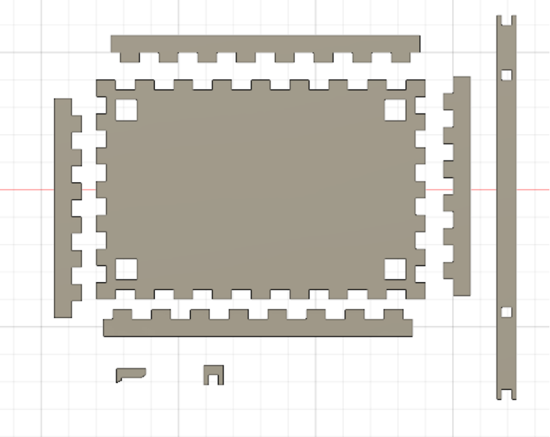Næst var það að búa til DXF skrár fyrir hönnunina. Ég var í miklum erfiðleikum með að búa til eina DXF skrá fyrir alla hlutina þannig ég endaði með að búa til eina skrá fyrir hvern hlut.
Nú var það að vinna með VCarve fyrsta sem þurfti að gera var að tengja VCarve skjalið mitt við VCarve sem er í Fablab þar sem fræsingin tók sér stað. Hér má sjá myndband hvernig það var gert Myndband. Næst var það að stilla stærð plötunar sem við mundum fá við til þess að fræsa. Hér fyrir neðan má sjá mynda af stærð plötunar, þá lengd, breidd og þykkt.
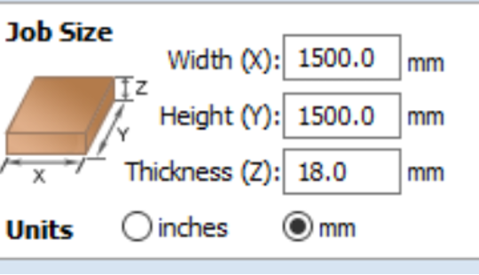Nú voru öll DXF skjölinn sett inn í VCarve og þar þurfti ég að afrita alla hlutina og stilla öllum pörtunum snyrtilega upp svo þeir mundu passa á stærð plötunar. Hér fyrir neðan má sjá fyrstu uppsetninguna af hönnuninni okkar í VCarve.
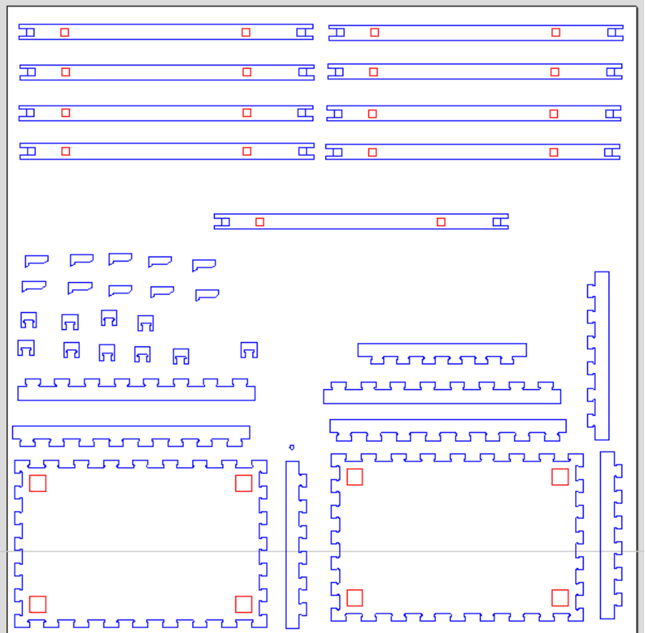Næst þurfti að setja “fillet” á öll horn í innskotum, þar sem fræsirinn getur ekki gert skörp horn. Í VCarve er tól fyrir þetta og notast er við T-Bone og Dog-Bone fillet með 3mm radíus. Frekari upplýsingar um þessar stillingar og aðferðir má sjá í myndbandi frá kennara námskeiðsins sem er hér fyrir ofan. Hér fyrir neðan má sjá mynd af hvernig fillet var notað þá í öllum hornum sem voru innan í hönnuninni því fræserinn var í vandræðum með þau horn en ekki þau sem voru þá útlínur af hönnuninni.
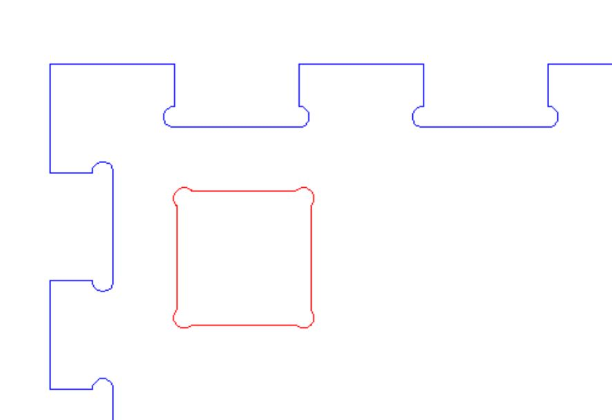Að lokum þarf að stilla feeds and speeds og toolpaths eins og myndbandið að ofan segir einnig til um. Hér að neðan má sjá þær stillingar sem settar eru inn fyrir verkefnið ásamt öllum þeim toolpaths sem settar eru inn, en þær eru sex talsins.
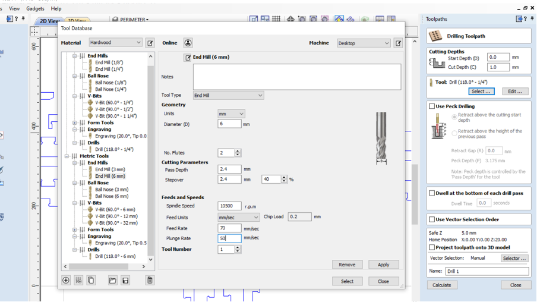 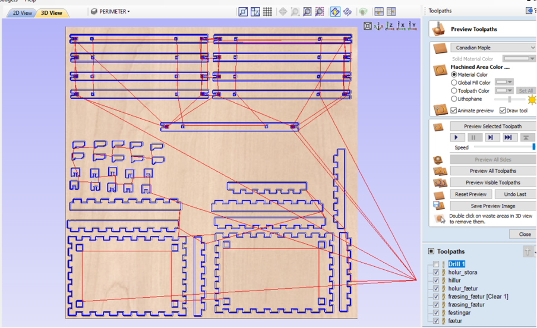Þegar komið er að fræsingu þarf að passa að fara aftur vel yfir allar nóður (e. nodes) í VCarve og sjá hvort eitthvað þurfi að laga, í samráði við kennara eða aðra vana einstaklinga. Einnig þarf að fullvissa sig um að réttur bor (eða haus) sé valinn, að stilla á skurð sem fer alveg í gegn þar sem við á og raða toolpaths í þá röð sem á að skera í.
Hér er passað að hafa auka svæði fyrir þá parta þar sem á að fræsa nokkra millimetra ofan í plötuna og þá parta þar sem á að skera alveg í gegn til að mætast. Þetta er til staðar í festinga stæðunum á fótum borðsins. Þá eru fyrrnefndu partarnir látnir ná út fyrir þá seinni, til þess að ekki myndist hak við skilin.
Borinn sem á að nota er 6mm og hefur hann verið valinn eins og sjá má á stillinga myndinni að ofan. Kornastærð sagsins er stillt á 0,2 - en mikilvægt er að hafa hana ekki of litla, sem eykur líkur á íkveikju, né of stóra, sem gæti valdið skemmdum á bornum.
Toolpaths eru svo stilltar í þá röð að fyrst er fræst þar sem ekki á að fara alveg í gegn, því næst eru það stærstu partarnir af hillunum tveimur, þá hliðar hillanna, fætur borðsins og að lokum festingarnar. Síðasta skrefið er að setja inn flipa meðfram hlutunum sem eru skornir út, til þess að þeir færist ekki úr stað við skurðinn. Þá er hægt að vista skrána og færa í tölvuna sem tengd er við fræsinn.
Fræsing hliðarborðs
Í þessum kafla eru helstu atriði sem gerð voru við fræsingu. Gott er að lesa vel yfir leiðbeiningar Shopbot fræsis frá FabLab áður en hafist er handa, en þær má sækja hér.
Þegar plötu að stærð amk 1500x1500 cm og 1,8 cm á þykkt hefur verið komið fyrir á fræsinum þarf að sjá til þess að öll undirbúnings- og öryggisatriði séu uppfyllt.
Áður en byrjað er að fræsa
- Setja upp öryggisgleraugu
- Setja upp heyrnarhlífar
- Binda upp hár og annað sem getur flækst
- Vera í lokuðum skóm
- Kynna sér hvernig á að stöðva fræsi í neyð
- Kveikja á frásogi
- Festa plötu til að fyrirbyggja skemmdir, slys og bruna
- Hita upp fræsinn
- Staðsetja öryggislykil - fræsir fer ekki af stað án hans
- Ath. að fræsir þarf að vera undir stöðugu eftirliti
- Að lokinni fræsingu þarf að færa fræsitönn í örugga stöðu og slökkva á fræsi
Hér má sjá ryksugu sem tengd er fræsinum.
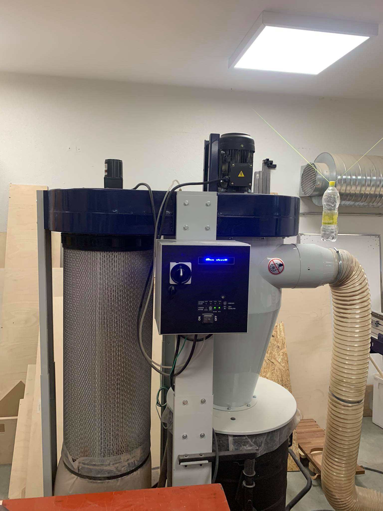Þegar listinn hefur verið athugaður og fræsirinn hitnað er hann núllstilltur á x-, y- og z- ás. Það er gert með því að færa fræsitönn á núllpunkt x- og y- ása með örvatökkum á lyklaborði og smella svo á Zero Axes í stýrikerfi. Aðeins er valið að núlltilla x- og y. Því næst er þess til gerð plata staðsett undir fræsitönn og valið er að núllstilla z-ás. Þegar því er lokið er plötunni skilað. Hér má sjá stýrikerfi fræsisins.
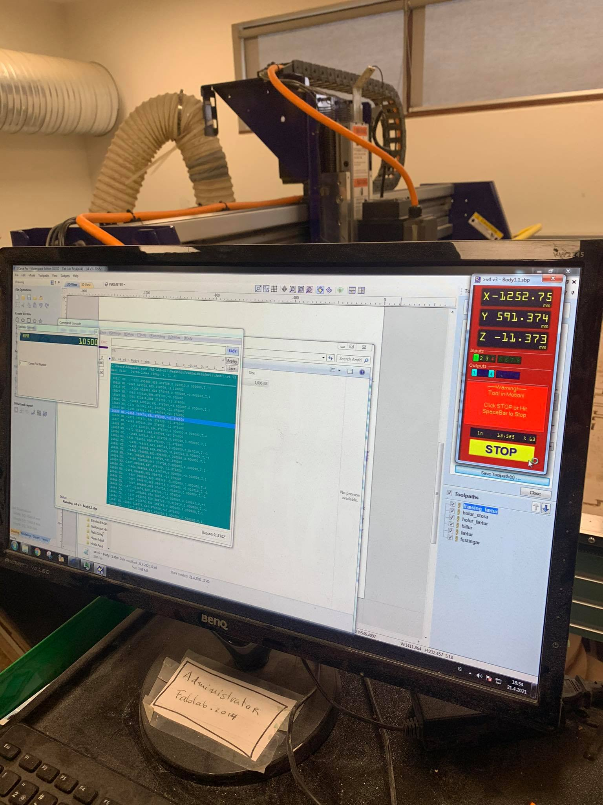Þegar öllu þessu er lokið er hægt að setja fræsinn af stað.
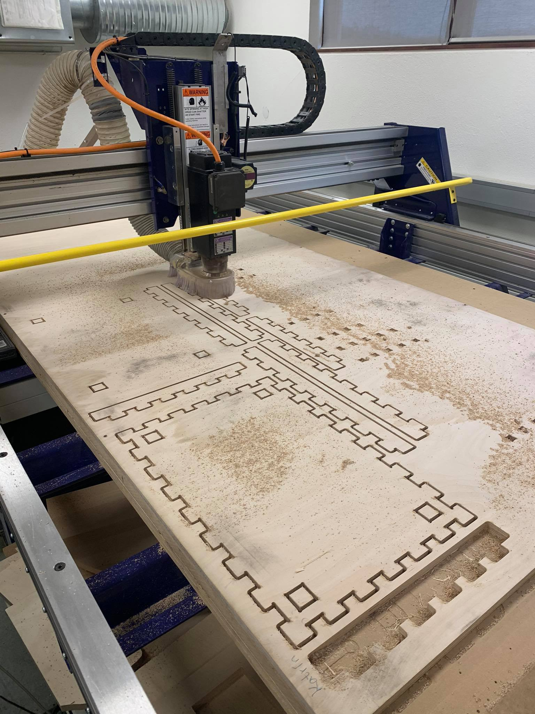Fræsingin tók u.þ.b. 2,5 klst og tókst vel til. Þegar henni er lokið þarf að ryksuga upp það sag sem eftir situr og losa hlutina úr plötunni, með því að brjóta flipana sem settir voru á þá, með hamri og sporjárni.
Samsetning hliðarborðs
Þá tók við að pússa og púsla hliðarborðinu saman.
Við samsetningu komu upp minniháttar hnökrar. Festingarnar sem eru í laginu eins og naglar voru aðeins of stórar til þess að passa í götin til að halda hillunum uppi ásamt því að fingurnir á hillunum voru ansi tæpir líka. Ákveðið var að saga örlítið af fingrunum og prufa að setja hliðarborðið saman án naglafestinganna.
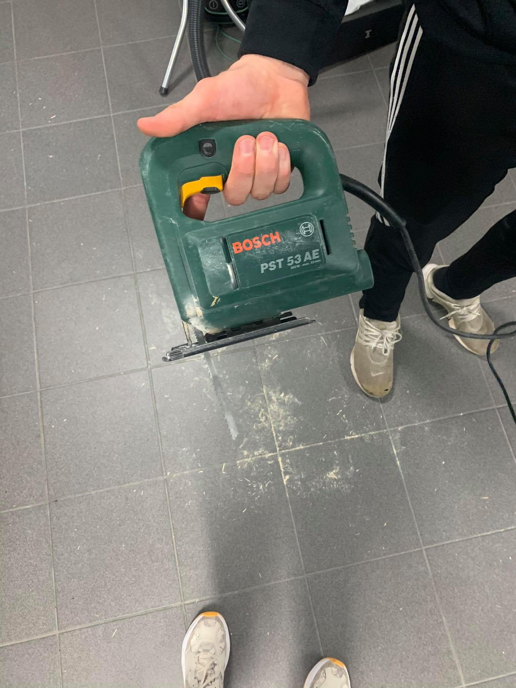Þessar reddingar nægðu til þess að samsetning heppnaðist, en fætur borðsins pössuðu akkúrat í götin á hillunum og ekki þurfti festingarnar til að halda hillunum uppi. Tólin sem notuð voru við pússun og samsetningu voru sandpappír, raspur og hamar.
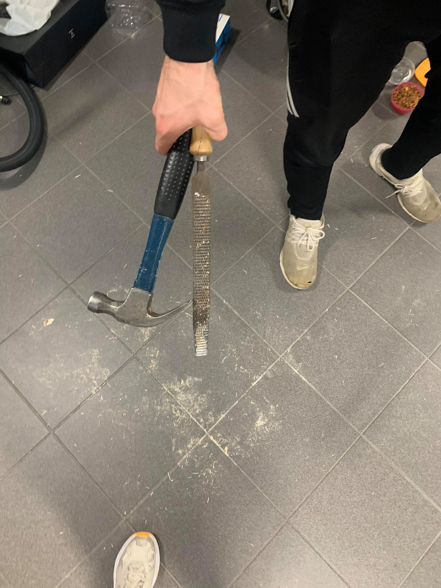Hér að neðan má svo sjá hliðarborðið þegar það hefur verið sett saman.
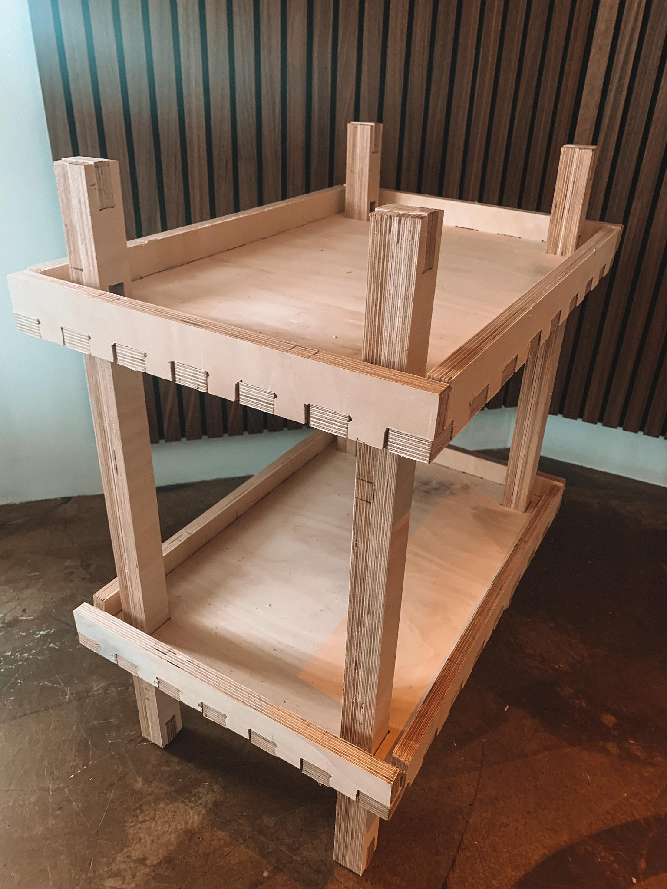Hönnunarskjöl
Hönnunarskjölin má finna í lokaskýrslunni okkar: Hönnunarskjöl
Tímaskráning fyrir - Að fræsa eitthvað stórt
| Verkþáttur | Tími (klst.) |
|---|---|
| Hugmyndavinna | 9 |
| Verkefnaskipting | 1 |
| Hönnun | 9 |
| Undirbúningur fyrir fræsingu | 1 |
| Úrvinnsla í VCarve | 4 |
| Fræsing | 6 |
| Samsetining | 5 |
Tímaskráning fyrir - Fræsing móts
| Verkþáttur | Tími (klst.) |
|---|---|
| Hugmyndvinna | 3 |
| Verkefnaskipting | 1 |
| Skýrsluvinna | 5 |